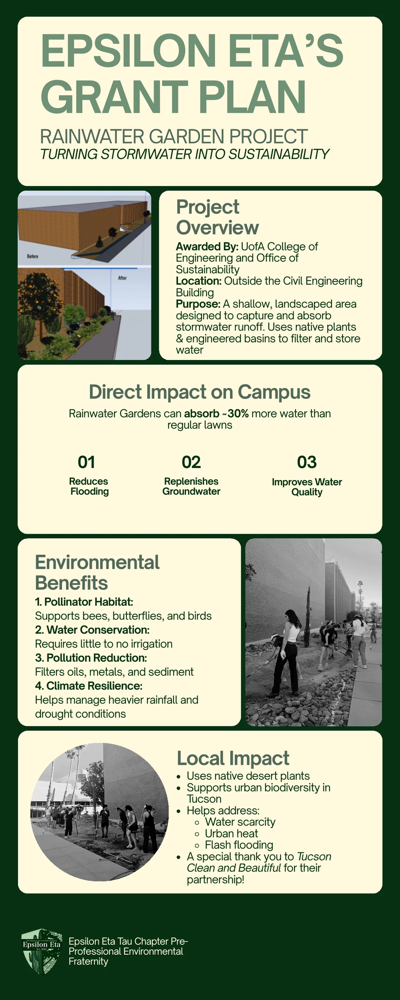
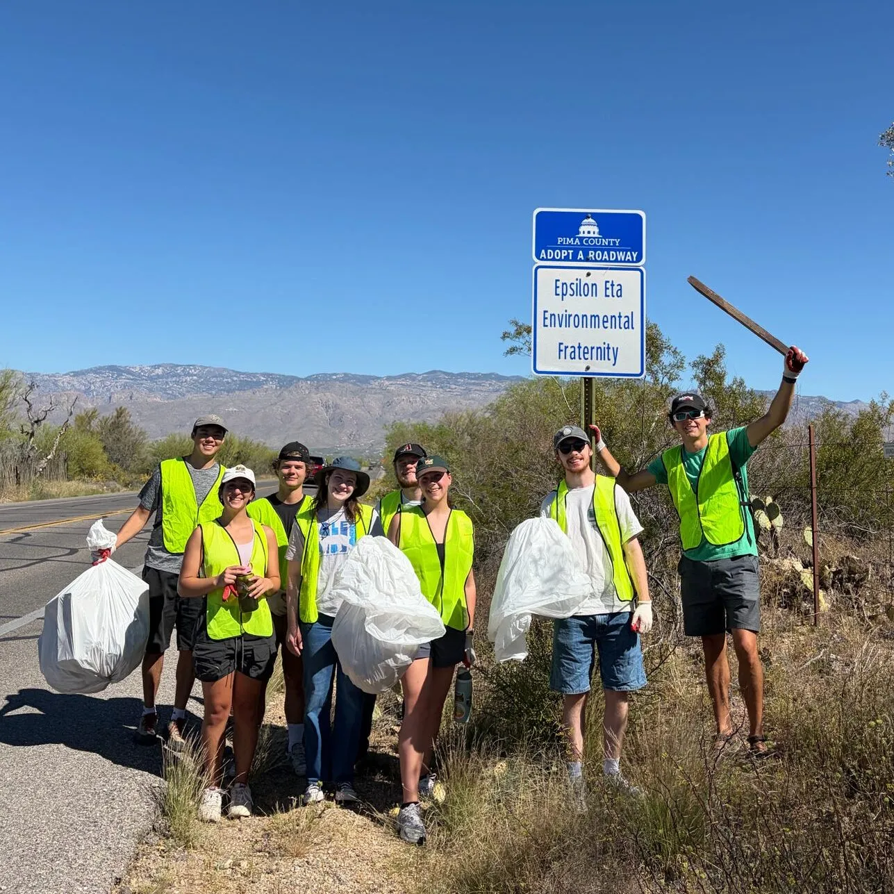
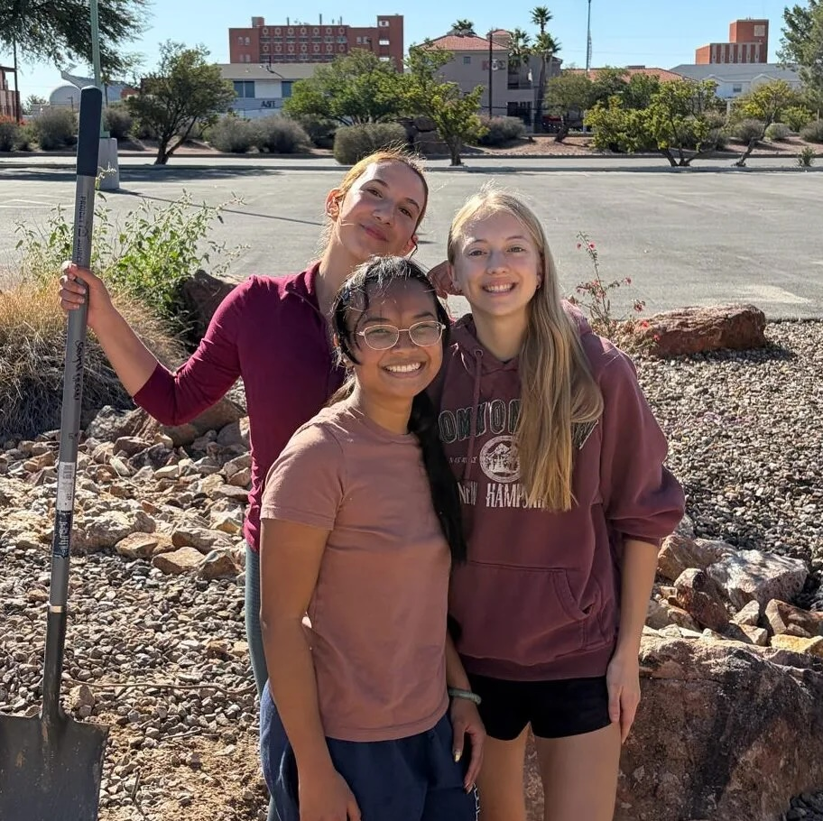
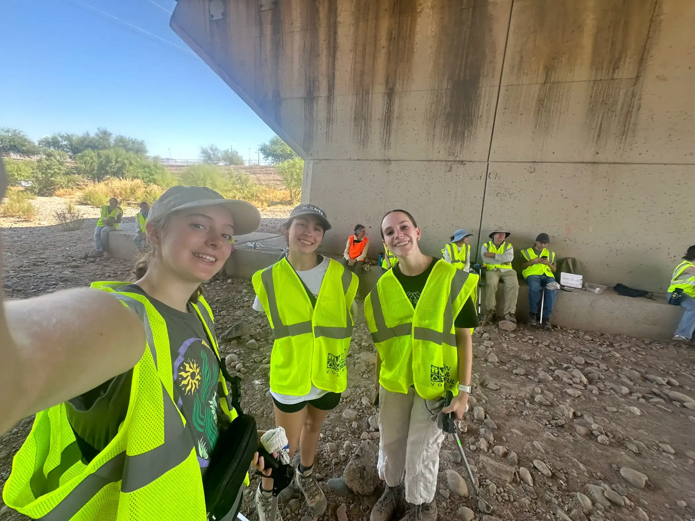
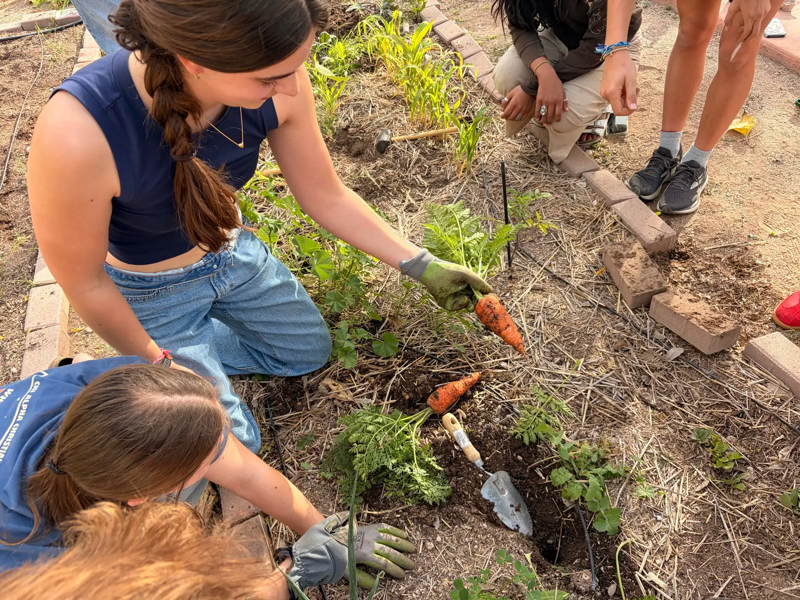

Hands-on service, environmental restoration, and community partnerships across Tucson — here's what we've been building.

Turning stormwater into sustainability — funded by a mini-grant from the Campus Sustainability Fund.
Epsilon Eta's first grant is bringing a rainwater garden to campus, outside the Civil Engineering Building. This shallow, landscaped area captures and absorbs stormwater runoff, using native plants and engineered basins to filter and store water — replenishing groundwater, reducing local flooding, and giving pollinators a home while celebrating Tucson's native plants.
We're so excited for this new adventure, and want to thank Tucson Clean and Beautiful for their hard work, helping hand, and partnership!

Through the "Adopt a Site" program, Epsilon Eta adopted South Freeman Road in East Tucson in 2023! We're responsible for keeping this road clean of trash, picking up roadside litter a minimum of two times per year, or as necessary based on evaluation by the county.
In three cleanups thus far, our club has helped South Freeman Road become significantly clearer of litter — and everyone always has such a great time bonding and beautifying our city!

Trees for Tucson is a program headed by Tucson Clean & Beautiful, where the community comes together to plant trees as part of Tucson Million Trees, an initiative to improve shading and promote urban ecosystems. Volunteers convene on Saturday mornings to plant trees for neighborhoods across the Tucson community.
We participated in two planting events in 2024 and continue to take part each October and beyond — a great opportunity to create a positive impact on our planet, tree by tree.

Santa Cruz River cleanup days are sponsored by many local organizations, including the Sonoran Institute and the Tucson Audubon Society. We gather at specific locations along the river and work together with the larger community to take on the serious issue of trash in the river.
At the most successful event this past year, hundreds of volunteers removed over 5,000 pounds of trash from the river! Volunteers enjoy live music, food trucks, and merch — and best of all, the chance to meet like-minded people who care about making our world a better place.

Working in our fraternity's plot at the University of Arizona Community Garden has become one of our favorite ways to spend time together outside of meetings and events — whether we're planting new vegetables, pulling weeds, watering in the Arizona heat, or figuring things out as we go.
It's a space where people can learn something new and enjoy being outdoors together. From afternoon work days to board games in the garden, our plot has become an important part of our chapter community!
There is strength in numbers to create visible, substantial, and positive environmental change — here are the organizations we're proud to work alongside.

Leads Trees for Tucson and partners with us on Santa Cruz River cleanups, fostering a cleaner, more sustainable environment through community involvement and education.

Focuses on the Growing Water Smart Program, aiding the functionality of the entire Colorado River Delta in addition to the Santa Cruz River.

Inspires people to enjoy and protect birds through recreation, education, conservation, and restoration of the environment.

Aims to create healthy and resilient communities, providing tools for events and seed balls to help restore the river.

Honors and celebrates the natural environment, cultural traditions, historical places, and working landscapes of the watershed. We've partnered with SCVNHA to remove buffelgrass, an invasive species in the Sonoran Desert.

Advances regenerative water management across the Southwest through rainwater harvesting, greywater reuse, and community-based restoration — a natural partner for our Rainwater Garden project.
Follow along on Instagram to catch our next service day, and learn how to join the chapter during Fall recruitment.